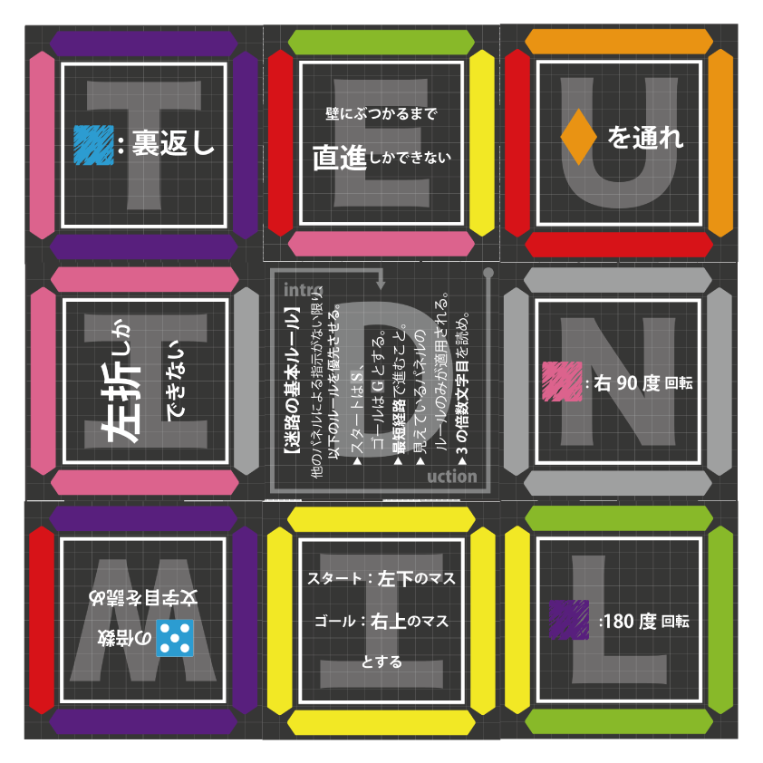

1st
問題の解く流れについて
第1ヒント
web画面の1から8までの数字の下にある白黒の四角は、それぞれパネルを表しています。web画面の情報からあるパネルを選び、そのパネルをもとに迷路を解き進めます。
第2ヒント
例えば、1の問題だったら3枚のパネルを使って「1」を、3の問題だったら5枚のパネルを使って「3」を表すことはできないでしょうか。
第3ヒント
1から8までの数字を英語で考えてみましょう。
第4ヒント
例えば1の問題について、パネルで「ONE」を作り、そのパネルに記されたルールに従って、18×18マスの迷路を解いてみましょう。
1~8までのそれぞれの問題の解き方
1の問題
「E(白)」のパネルの情報から
、スタートの位置は18×18マスの迷路の一番左上のマス、ゴールの位置は18×18マスの迷路の一番右下のマスになります。
「O」と「N」のパネルの情報から
、(クローバーを右90度回転させた図形）は通ることができません。
答えの1文字目は
「ブ」です。
2の問題
「W」のパネルについて
、記されている図形はサイコロの5の目です。
「T」と「W」のパネルの情報から
、サイコロの5の面は裏返す必要があり、面の数が2に変わります。つまり2の倍数文字目を読むということになります。
答えの1文字目は
「ブ」です。
3の問題
「R」のパネルについて
、記されている図形はサイコロの6の目です。
「T」と「R」のパネルの情報から
、サイコロの6の面は裏返す必要があり、面の数が1に変わります。つまりスタートを0マス目として1の倍数マス目にしか曲がれません。（どのマス目でも曲がることができます）
「E(白)」のパネルの情報から
、スタートの位置は18×18マスの迷路の一番左上のマス、ゴールの位置は18×18マスの迷路の一番右下のマスになります。
答えの1文字目は
「ミ」です
4の問題
「R」のパネルについて
記されている図形はサイコロの6の目です。6の倍数マス目でしか曲がることができません。
「F」と「U」のパネルの情報から
（Uに記されている菱形を左90度回転させた横長の菱形）を通る必要があります。
答えの1文字目は
「オ」です。
5の問題
「F」と「V」のパネルの情報から
（スペードを左90度回転させた図形）のマスから（ハート）のマスにワープをする必要があります。
「I」のパネルの情報から
、スタートの位置は18×18マスの迷路の一番左下のマス、ゴールの位置は18×18マスの迷路の一番右上のマスになります。
答えの1文字目は
「ム」です。
6の問題
「I」のパネルの情報から
スタートの位置は18×18マスの迷路の一番左下のマス、ゴールの位置は18×18マスの迷路の一番右上のマスになります。
答えの1文字目は
「キ」です。
7の問題
「E(白)」のパネルの情報から
、スタートの位置は18×18マスの迷路の一番左上のマス、ゴールの位置は18×18マスの迷路の一番右下のマスになります。
「V」と「N」のパネルの情報から
、（スペード）のマスから（ハートを右90度回転させた図形）のマスにワープをする必要があります。
答えの1文字目は
「サ」です。
8の問題
「I」のパネルの情報から
、スタートの位置は18×18マスの迷路の一番左下のマス、ゴールの位置は18×18マスの迷路の一番右上のマスになります。
「T」と「G」のパネルの情報から
、サイコロの2の面は裏返す必要があり、面の数が5に変わります。つまり5回曲がれということになります。
答えの1文字目は
「ネ」です。
迷路の基本ルールについて
・「〜の倍数『文字』目」と「〜の倍数『マス』目」は違うことに注意しましょう。
・迷路は『最短経路』で進むことを忘れないようにしましょう。
2nd
第1ヒント
1stでは1から8までの数字を英語で表しましたが、2ndでは1から8までの数字を違う表現で表します。
第2ヒント
1から8までの数字を表すためには、1stの答えを使います。
第3ヒント
パネルの外枠に書かれているセグメントにはそれぞれ色が付いています。同じ色のセグメントに注目すると、それで数字を作ることができます。
第4ヒント
2枚のパネルを上下に並べて、1だったら赤のセグメント、2だったら青のセグメントで数字を1から8まで作ります。答えは矢印が通るアルファベット8文字の英単語です。
3rd
第1ヒント
まずは図の通りに、「T」、「L」、「O」、「G」のパネルを迷路の盤面にはめ込みます。
第2ヒント
3×3のマスの中央に書かれている「4」は数字ではありません。
第3ヒント
3×3のマスの中央に書かれている「4」は方位を表す記号です。
4th
問題の解く流れ
1.見えている8枚のパネルをもとに、6×6マスの迷路を解き進めます。
2.迷路を解いて例えば「シタ」と出た場合、空いている箇所に対してその「シタ」にあるパネルを1枚スライドさせます。
3.スライドさせる際に、「シタ」にあるパネルのうち、移動させる方向のセグメントが「ブルー」だった場合は、ブルーのルールである「裏返し」をそのパネル自体に適応させます。つまりパネルは裏返しになります。（同様に、「サクライロ」だった場合は「右90度回転」、「ムラサキ」だった場合は「180度回転」）
4.迷路を解いて出る答えが方向以外の単語になるまで、1から3を繰り返します。
迷路が解けない場合
・8つのパネルのルールをすべて反映させられていますか？
・読む文字数目は正しいでしょうか？
・パネルを１個前の状態にして、もう一度解いてみても良いかもしれません。
・どうしても詰まった場合は、初期配置の状態からもう一度解き直すことを推奨します。
last
第1ヒント
4thで配置した8枚のパネルはこれ以上動かす必要はありません。
第2ヒント
迷路の盤面から「ライト」を探してみましょう。
第3ヒント
答えは9文字の英単語です。web画面上の矢印と同様の矢印を、当てはめたパネルにも見つけることができます。
最終解答が単語にならない場合
4thのパネル移動の段階で、90°右回転（サクライロ）、180°回転（ムラサキ）を間違えている可能性があります。パネル移動の際に色のルールをブルー以外にも適応させましょう。
迷路を解き直すのが面倒な方へ
これが正しいパネル配置の様子です。
